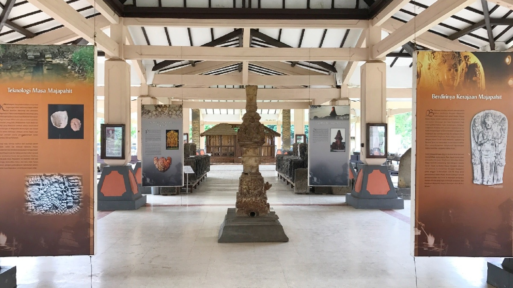

Museum Majapahit yang terletak di Trowulan, Mojokerto, Jawa Timur, adalah salah satu museum penting yang menyimpan bukti sejarah dan artefak dari Kerajaan Majapahit, salah satu kerajaan terbesar di Nusantara. Museum ini dibangun di kawasan yang dahulu merupakan pusat Kerajaan Majapahit, sehingga menjadi tempat yang sangat bersejarah dan relevan dalam menelusuri kejayaan masa lalu Indonesia.
Museum ini awalnya didirikan pada tahun 1924 oleh arkeolog Belanda bernama Henri Maclaine Pont, yang terinspirasi oleh penemuan berbagai artefak peninggalan Majapahit di wilayah Trowulan. Namun, museum baru resmi beroperasi pada tahun 1987 dengan nama Museum Trowulan, sebelum kemudian berganti nama menjadi Museum Majapahit. Museum ini dikelola oleh Dinas Kebudayaan dan Pariwisata Jawa Timur dan berfungsi sebagai tempat penelitian serta edukasi mengenai sejarah Majapahit.
Museum Majapahit tidak hanya berfungsi sebagai tempat penyimpanan artefak, tetapi juga menjadi pusat penelitian arkeologi dan sejarah mengenai Kerajaan Majapahit. Penemuan-penemuan baru terus diungkap oleh para arkeolog, yang kemudian dipajang di museum ini. Dengan adanya museum ini, masyarakat dapat belajar tentang kejayaan Kerajaan Majapahit dan warisan budayanya yang masih terasa hingga kini.
Museum Majapahit berlokasi di Trowulan, yang dapat dijangkau dengan mudah dari pusat kota Mojokerto. Lokasinya yang berada di kawasan arkeologi Trowulan membuat museum ini menjadi bagian dari perjalanan sejarah yang lengkap, di mana pengunjung tidak hanya dapat melihat koleksi di dalam museum, tetapi juga mengeksplorasi situs-situs peninggalan Majapahit di sekitar museum.
Dengan segala koleksi dan perannya dalam melestarikan sejarah, Museum Majapahit menjadi salah satu destinasi budaya yang sangat penting untuk dikunjungi, terutama bagi mereka yang ingin mengenal lebih dekat sejarah dan peradaban Kerajaan Majapahit, salah satu kerajaan terbesar dan paling berpengaruh dalam sejarah Indonesia.